library(tidyverse)
library(readxl)
library(stringr)
library(janitor)
library(units)
library(emmeans)
library(lmerTest)
library(lme4)
library(performance)
library(see)
library(DHARMa)
library(pbkrtest)
library(ggpmisc)Data processing
Libraries
Importing data
1. Handsheet data
Now we start with the data
This first code chunk will import the data of the handsheets that was measured in the lab like weight, caliper, and tear.
fines_data <- read_xlsx("raw_data/Fines_study.xlsx",
sheet = "Handsheet_properties")2. Pulping data
Import the pulping data like temperature, time, chemical charge, pulping, and screening yield, and kappa.
Here i can select which columns are going to appear in my final table
Pulping_data <- read_xlsx("raw_data/Fines_study.xlsx",
sheet = "Pulping") #|>
# select(Biomass, Code, Kappa, Total_screened_yield, )3. Freeness data
This code is importing the freeness data and selecting just the final values and an ID to later related to other tables.
freeness_data <- read_xlsx("raw_data/Fines_study.xlsx",
sheet = "Freeness") |>
select(ID1, freeness)4. Tensile data
In this code chunk we are going to import the data from the tensile test.
Getting the data from the tensile tests
tensile_data <- read_xlsx("raw_data/tensile_data.xlsx")5. FQA data
We are going to call the file where previously imported data is stored, this is done in this way, since the amount of excel files that needs to be read each time is big, and create computation constrains. In case the data does not exist, execute the file fqa_data_extraction.R
After the .rds file has been created, we are going to bring it to our environment as a new object.
fqa_data <- readRDS("raw_data/fqa_data.rds")Wrangling data
All the previously imported have different variables, columns, spaces, missing values, etc, which need to be fixed below.
1. Master table
Creating a master table with all the data that is going to be used later We need to create the variables for each of the columns
all_data <- fines_data |>
mutate(biomass = as.factor(Biomass),
Biomass = NULL,
fines = factor(ifelse(
str_detect(ID,"F"), "Y", "N")),
hs_treatment = factor(
case_when(
str_detect(ID, "A") ~ "additive",
str_detect(ID, "5") ~ "recirculation",
str_detect(ID, "[1-4]") ~ "control"),
levels = c("control", "recirculation", "additive")),
Code = str_extract(ID, "^[WE]\\d"),
ID1 = str_extract(ID, "^[WE]\\d.")
) |>
inner_join(Pulping_data, by = join_by(Code)) |>
left_join(freeness_data, by = join_by(ID1)) |>
left_join(tensile_data, by = join_by(ID)) |>
select(-Biomass, -ID1) |>
relocate(Code, biomass, fines, hs_treatment, .after = ID) |>
mutate(
id2 = str_extract(str_remove(ID, "A"), "^.{3}")
)###2. FQA wrangling
Now that all the data is in that table, we need to fix the data
fqa2_data <- fqa_data|>
slice(-c(1:13, 19, 22, 23, 27, 29, 31)) |>
drop_na(E1F1r) |>
pivot_longer(-SampleId,
names_to = "Sample",
values_to = "Value") |>
pivot_wider(names_from = SampleId,
values_from = Value) |>
clean_names() |>
mutate(across(-sample, as.double)) |>
mutate(id2 = str_extract(sample, "^[WE]\\d[FN]")) |>
group_by(id2) |>
summarise(
across(where(is.numeric), mean, na.rm = T
))Warning: There was 1 warning in `summarise()`.
ℹ In argument: `across(where(is.numeric), mean, na.rm = T)`.
ℹ In group 1: `id2 = "E1F"`.
Caused by warning:
! The `...` argument of `across()` is deprecated as of dplyr 1.1.0.
Supply arguments directly to `.fns` through an anonymous function instead.
# Previously
across(a:b, mean, na.rm = TRUE)
# Now
across(a:b, \(x) mean(x, na.rm = TRUE))3. Hypothesis test data
Here we are setting units, in this code also main calculations of new variables is performed, and the numbers are later strip from their units so they are compatibles with statistical analysis functions.
area_m2 <- set_units(0.02, "m^2")
hyp_data <- all_data |>
select(c(1:8, 16, 19:23, 25:27)) |>
mutate(weight_g = set_units(weight, "g"),
thickness_um = set_units(thickness,"um"),
force_N = set_units(`F_[N]`, "N"),
# Total_yield = set_units(Total_yield*100, "%"),
# Total_screened_yield = set_units(Total_screened_yield*100, "%"),
ModElas_MPa = set_units(`ModElas_[MPa]`, "MPa"),
tear_gf = set_units(tear_gf, "gf")
) |>
mutate(bw_g_m2 = weight_g * 0.93 / area_m2,
density_g_cm3 = set_units(bw_g_m2 / thickness_um, "g/cm^3"),
T_index_kNm_kg = set_units(force_N/ set_units(15, "mm") / bw_g_m2,
"kN*m/kg"),
Code = factor(Code),
tear_N = set_units(tear_gf, "N"),
tear_index_m2N_kg = set_units (tear_N / bw_g_m2, "m^2*N/kg")
) |>
drop_units() |>
select(-c("F_[N]", "tFmax [s]", "ModElas_[MPa]",
"weight", "thickness", "TEA_[J/m²]"))
#|>
# group_by(
# Code,
# biomass,
# fines,
# hs_treatment
# ) #|>
# summarise(
# T_index = mean(T_index, na.rm = TRUE),
# n_sheets = n(),
# .groups = "drop"
# )Exploratory Data Analysis
In this section we are going to perform basic exploratory data analysis before starting with the hypothesis test.
We are going to check distributions, with boxplots, bars charts, and check normality.
1. Checking normality
library(ggplot2)
ggplot(hyp_data, # |> filter(hs_treatment == "control"),
aes(y = density_g_cm3,
# y = tear_index_m2N_kg,
x = hs_treatment,
#colour = biomass,
fill = biomass,
alpha = 0.5
)) +
# geom_point() +
geom_boxplot()+
# geom_jitter() +
# geom_smooth(method = "lm",
# se = FALSE) +
# stat_poly_eq(
# aes(
# label = paste(..rr.label..)
# ),
# formula = y ~ x,
# parse = TRUE
# ) +
# labs(
# x = "Density g/cm^3",
# y = "T Index",
# color = "Treatment"
# ) +
theme_minimal()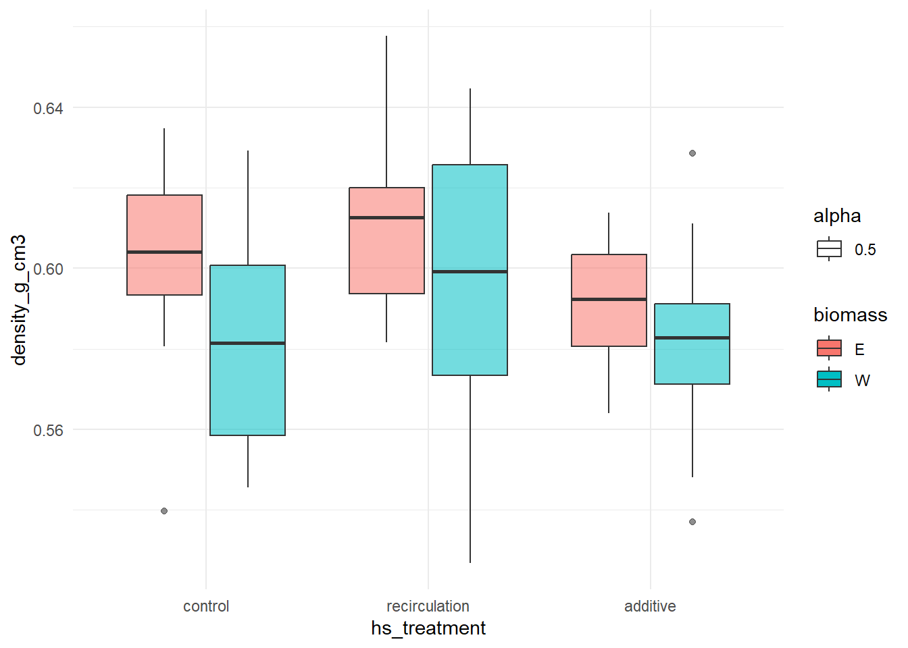
Q-Q plots
- Density distributions
ggplot(hyp_data, aes(sample = density_g_cm3)) +
stat_qq() +
stat_qq_line(color = "red") +
theme_minimal() +
labs(
title = "Q-Q Plot of Density",
x = "Theoretical Quantiles",
y = "Sample Quantiles"
)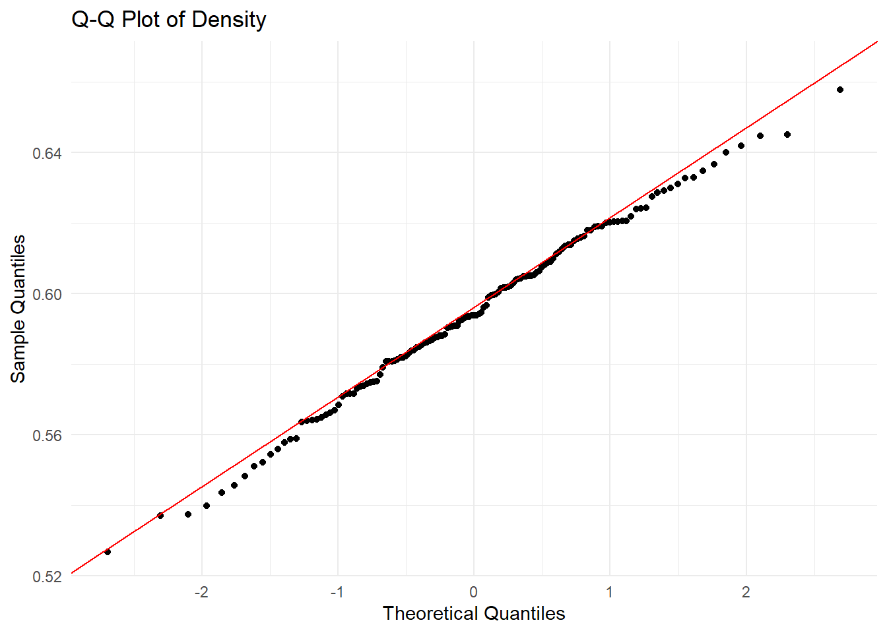
library(rstatix)Warning: package 'rstatix' was built under R version 4.5.3Registered S3 method overwritten by 'car':
method from
na.action.merMod lme4
Attaching package: 'rstatix'The following object is masked from 'package:janitor':
make_clean_namesThe following object is masked from 'package:stats':
filterhyp_data |>
dplyr::filter(biomass == "W",
fines == "Y") |>
dplyr::group_by(hs_treatment) |>
# pull(tear_index_m2N_kg) |>
summarise(p_value = shapiro.test(tear_index_m2N_kg)$p.value,
sample_size = n())# A tibble: 3 × 3
hs_treatment p_value sample_size
<fct> <dbl> <int>
1 control 0.651 12
2 recirculation 0.354 12
3 additive 0.452 12ggplot(hyp_data |> filter(hs_treatment == "recirculation",
biomass == "W",
fines == "Y"),
aes(sample = tear_index_m2N_kg)) +
stat_qq() +
stat_qq_line(color = "red") +
theme_minimal() +
labs(
title = "Q-Q Plot of Tear index",
x = "Theoretical Quantiles",
y = "Sample Quantiles"
)Warning: Removed 3 rows containing non-finite outside the scale range
(`stat_qq()`).Warning: Removed 3 rows containing non-finite outside the scale range
(`stat_qq_line()`).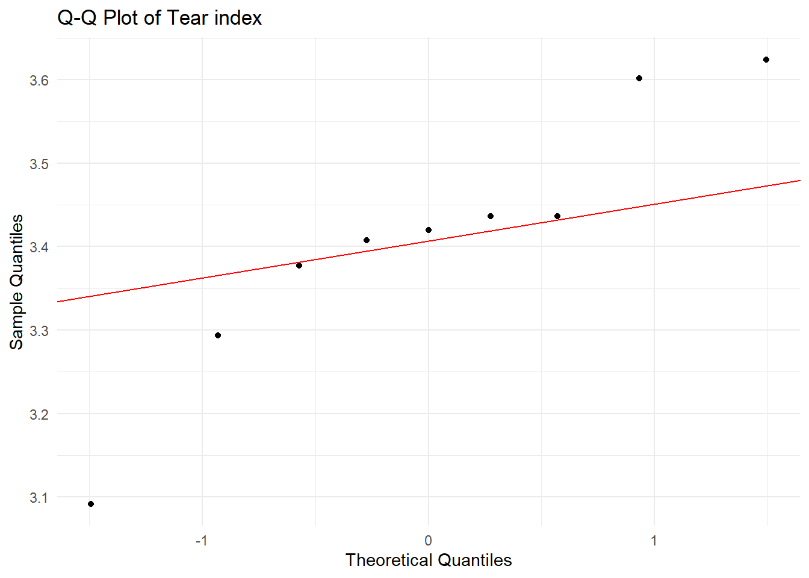
#if i omit the `plot = my_plot` it will save the last plot printed
#ggsave("QQ_tear_index.jpg", width = 8, height = 6, dpi = 300)ggplot(hyp_data |> filter(hs_treatment == "additive",
biomass == "W"),
aes(sample = T_index_kNm_kg)
) +
stat_qq() +
stat_qq_line(color = "red") +
theme_minimal() +
labs(
title = "Q-Q Plot of Tensile index",
x = "Theoretical Quantiles",
y = "Sample Quantiles"
)Warning: Removed 6 rows containing non-finite outside the scale range
(`stat_qq()`).Warning: Removed 6 rows containing non-finite outside the scale range
(`stat_qq_line()`).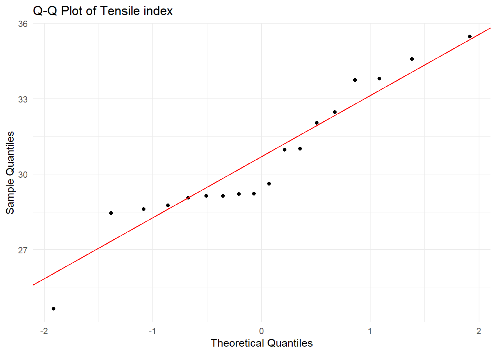
mod <- lm(T_index_kNm_kg ~ hs_treatment, data = hyp_data)
ggplot(data.frame(res = residuals(mod)),
aes(sample = res)) +
stat_qq() +
stat_qq_line()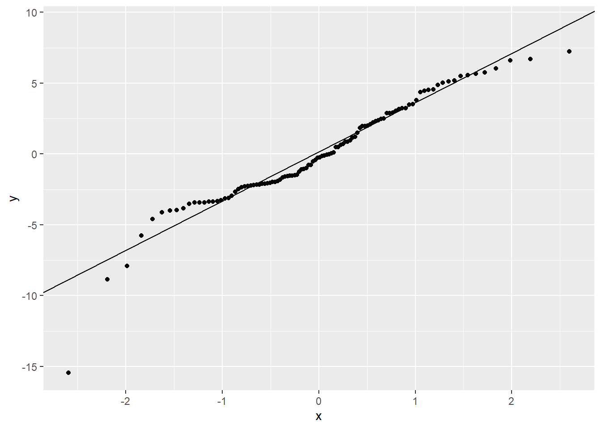
2. Checking interaction plot
We create the table a summary table with the summary of values for each independent replicate and the correspondent treatment
cell_data <- hyp_data |>
group_by(
Code,
biomass,
fines,
hs_treatment
) |>
summarise(
n_handsheets = sum(!is.na(T_index_kNm_kg)),
# mean_T_index = if_else(
# n_handsheets > 0,
# mean(T_index_kNm_kg, na.rm = TRUE),
# NA_real_
# ),
#
# sd_T_index = if_else(
# n_handsheets > 1,
# sd(T_index_kNm_kg, na.rm = TRUE),
# NA_real_
# ),
#
# se_T_index = if_else(
# n_handsheets > 1,
# sd_T_index / sqrt(n_handsheets),
# NA_real_
# ),
across(where(is.numeric),
list("mean" = ~ mean(.x, na.rm = T)),
.names = "{.fn}_{.col}"),
.groups = "drop"
)
cell_data# A tibble: 36 × 21
Code biomass fines hs_treatment n_handsheets mean_tear_gf mean_Total_pulp_OD
<fct> <fct> <fct> <fct> <int> <dbl> <dbl>
1 E1 E N control 3 24.2 119.
2 E1 E N recirculati… 3 25 119.
3 E1 E N additive 3 18.4 119.
4 E1 E Y control 3 22.2 119.
5 E1 E Y recirculati… 3 22.2 119.
6 E1 E Y additive 3 20.1 119.
7 E2 E N control 3 24.2 122.
8 E2 E N recirculati… 2 25.5 122.
9 E2 E N additive 3 17.8 122.
10 E2 E Y control 3 21.7 122.
# ℹ 26 more rows
# ℹ 14 more variables: mean_Screening_yield <dbl>,
# mean_Total_screened_yield <dbl>, mean_Kappa <dbl>, mean_freeness <dbl>,
# mean_weight_g <dbl>, mean_thickness_um <dbl>, mean_force_N <dbl>,
# mean_ModElas_MPa <dbl>, mean_bw_g_m2 <dbl>, mean_density_g_cm3 <dbl>,
# mean_T_index_kNm_kg <dbl>, mean_tear_N <dbl>, mean_tear_index_m2N_kg <dbl>,
# mean_n_handsheets <dbl>Then we need to create a tibble with the mean variable, the standard deviation and the standard error for each of the biomass x fines x treatment combination.
T_index_data <- cell_data |>
group_by(
biomass,
fines,
hs_treatment
) |>
summarise(
n_cooks = sum(!is.na(mean_T_index_kNm_kg)),
mean_T_index1 = mean(mean_T_index_kNm_kg, na.rm = TRUE),
sd_between_cooks = sd(mean_T_index_kNm_kg, na.rm = TRUE),
.groups = "drop"
)
T_index_data# A tibble: 12 × 6
biomass fines hs_treatment n_cooks mean_T_index1 sd_between_cooks
<fct> <fct> <fct> <int> <dbl> <dbl>
1 E N control 3 39.1 2.59
2 E N recirculation 3 41.0 1.10
3 E N additive 3 37.0 1.30
4 E Y control 3 37.4 1.51
5 E Y recirculation 3 38.1 0.980
6 E Y additive 3 32.2 1.77
7 W N control 3 34.4 0.786
8 W N recirculation 3 34.4 1.26
9 W N additive 3 30.5 3.11
10 W Y control 3 33.6 4.09
11 W Y recirculation 3 34.1 2.68
12 W Y additive 3 30.7 2.34 # descriptive_results <- cell_data |>
# group_by(
# biomass,
# fines,
# hs_treatment
# ) |>
# summarise(
# n_cooks = sum(!is.na(mean_T_index)),
# mean_T_index1 = mean(mean_T_index, na.rm = TRUE),
# sd_between_cooks = sd(mean_T_index, na.rm = TRUE),
# se_between_cooks =
# sd_between_cooks / sqrt(n_cooks),
# minimum_cook_mean =
# min(mean_T_index, na.rm = TRUE),
# maximum_cook_mean =
# max(mean_T_index, na.rm = TRUE),
# .groups = "drop"
# )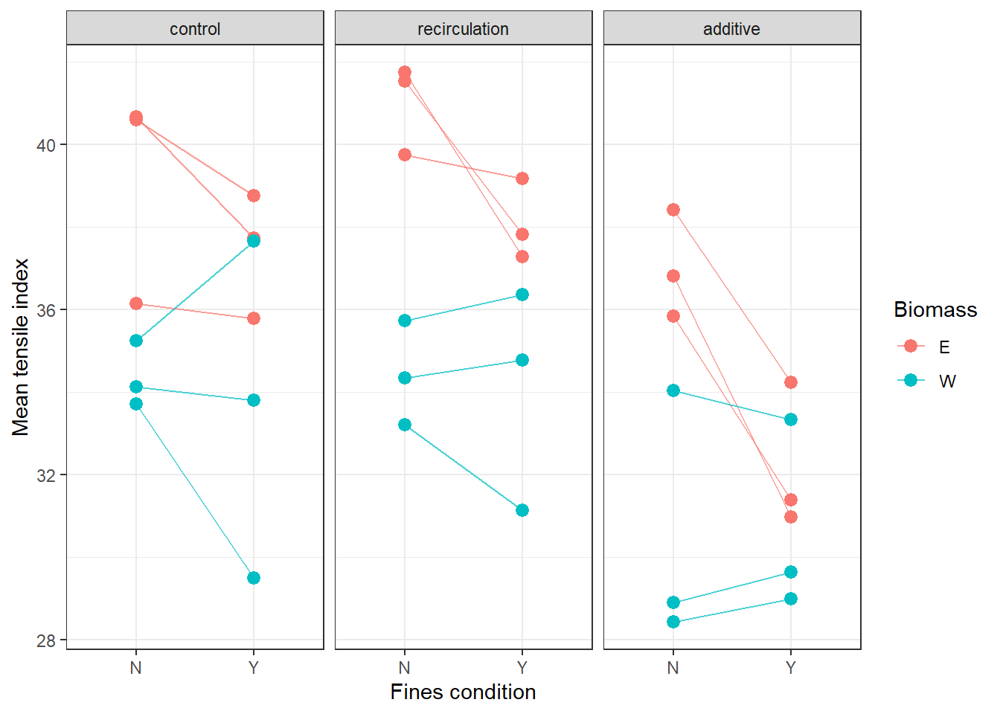
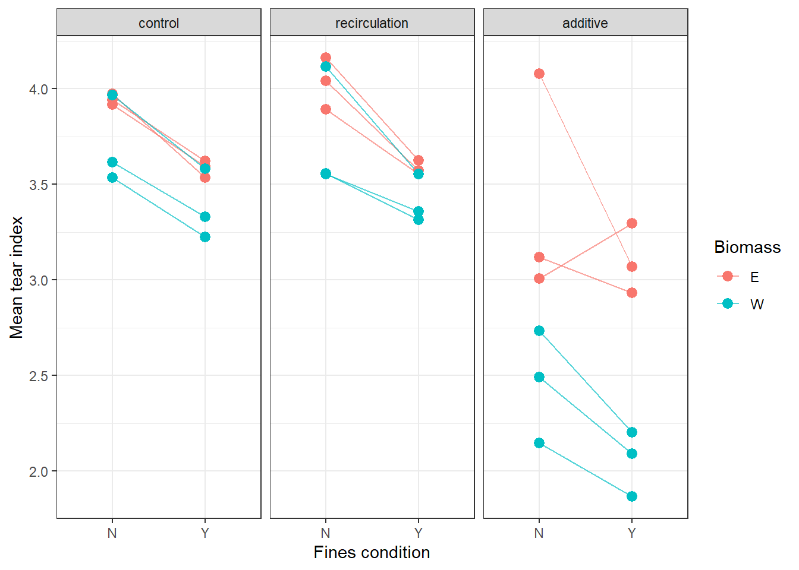
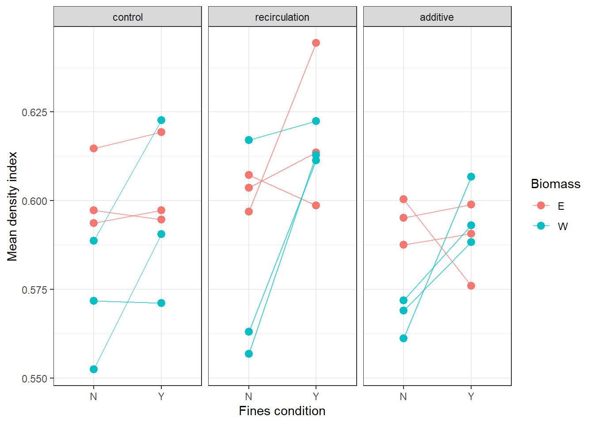
`geom_smooth()` using formula = 'y ~ x'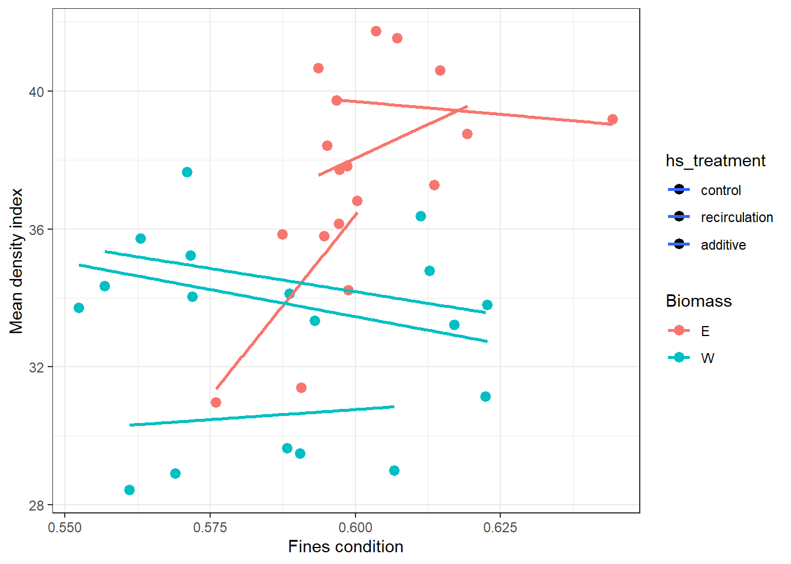
Running for hypothesis test
First we test whether fines affect tensile or not
\(H_o: \mu_{Fines} = \mu_{NoFines}\)
\(H_a: \mu_{Fines} \neq \mu_{NoFines}\)
mod_full <- lmer(
T_index_kNm_kg ~ biomass * fines * hs_treatment +
(1 | Code),
data = hyp_data
)
anova(mod_full, type = 3)Type III Analysis of Variance Table with Satterthwaite's method
Sum Sq Mean Sq NumDF DenDF F value Pr(>F)
biomass 58.25 58.246 1 4.014 10.9711 0.0294339 *
fines 76.88 76.878 1 90.022 14.4806 0.0002579 ***
hs_treatment 374.25 187.124 2 90.022 35.2464 4.952e-12 ***
biomass:fines 53.72 53.722 1 90.022 10.1190 0.0020138 **
biomass:hs_treatment 7.11 3.553 2 90.022 0.6693 0.5145859
fines:hs_treatment 5.59 2.795 2 90.022 0.5264 0.5925465
biomass:fines:hs_treatment 18.52 9.259 2 90.022 1.7440 0.1806690
---
Signif. codes: 0 '***' 0.001 '**' 0.01 '*' 0.05 '.' 0.1 ' ' 1Based on the p-values, we reject the null hypothesis, and have strong evidence to conclude that the probability of getting this value under the assumption that the null hypothesis is true, is very low. Therefore we conclude that Fines do have an effect on the tensile index of the handsheets.
Also, based on the p-value for the interaction between biomass:fines, we have strong evidence to conclude that there is an interaction between biomass and fines, so the effect of fines differs between eucalyptus and wheat straw.
Based on the p-value for the interaction between fines and the handsheet treatment, we fail to reject the null hypothesis, and conclude that the handsheet treatment does not change the effect of the fines (no direct correlation between the treatment and the fines type)
And finally based on the interaction term between biomass, fines, and treatment, we can conclude that the use of the cationic polymer, or the re circulation does not affect differently the wheat straw of the eucalyptus.
hs_data <- hyp_data %>%
mutate(
Code = factor(Code),
biomass = factor(
biomass,
levels = c("E", "W"),
labels = c("Eucalyptus", "Wheat_straw")
),
fines = factor(
fines,
levels = c("N", "Y"),
labels = c("No_fines", "Fines")
),
hs_treatment = factor(
hs_treatment,
levels = c(
"control",
"recirculation",
"additive"
),
labels = c(
"Control",
"Recirculation",
"Polymer"
)
)
)sample_size_table <- hs_data |>
group_by(
biomass,
Code,
fines,
hs_treatment
) |>
summarise(
n_measured = sum(!is.na(T_index_kNm_kg)),
n_missing = sum(is.na(T_index_kNm_kg)),
.groups = "drop"
)
sample_size_table# A tibble: 36 × 6
biomass Code fines hs_treatment n_measured n_missing
<fct> <fct> <fct> <fct> <int> <int>
1 Eucalyptus E1 No_fines Control 3 1
2 Eucalyptus E1 No_fines Recirculation 3 0
3 Eucalyptus E1 No_fines Polymer 3 1
4 Eucalyptus E1 Fines Control 3 1
5 Eucalyptus E1 Fines Recirculation 3 1
6 Eucalyptus E1 Fines Polymer 3 1
7 Eucalyptus E2 No_fines Control 3 1
8 Eucalyptus E2 No_fines Recirculation 2 1
9 Eucalyptus E2 No_fines Polymer 3 1
10 Eucalyptus E2 Fines Control 3 1
# ℹ 26 more rowscell_data <- hs_data %>%
group_by(
Code,
biomass,
fines,
hs_treatment
) %>%
summarise(
n_handsheets = sum(!is.na(T_index_kNm_kg)),
mean_T_index = if_else(
n_handsheets > 0,
mean(T_index_kNm_kg, na.rm = TRUE),
NA_real_
),
sd_T_index = if_else(
n_handsheets > 1,
sd(T_index_kNm_kg, na.rm = TRUE),
NA_real_
),
se_T_index = if_else(
n_handsheets > 1,
sd_T_index / sqrt(n_handsheets),
NA_real_
),
.groups = "drop"
)library(ggplot2)
ggplot(cell_data,
aes(x = biomass,
y = mean_T_index,
fill = hs_treatment)) +
geom_violin() +
labs(
x = "Biomass",
y = "T Index",
fill = "Treatment"
) +
theme_minimal()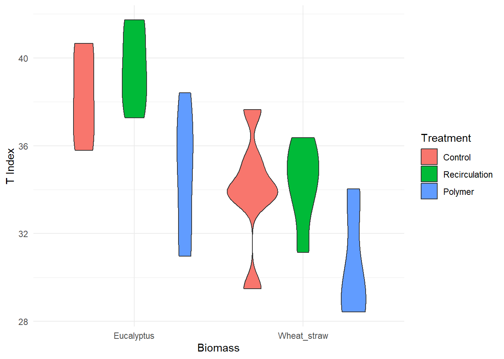
Descriptive statistics
results_summary <- cell_data %>%
group_by(
biomass,
fines,
hs_treatment
) %>%
summarise(
n_cooks = sum(!is.na(mean_T_index)),
mean = mean(mean_T_index, na.rm = TRUE),
sd_between_cooks = sd(mean_T_index, na.rm = TRUE),
se_between_cooks = sd_between_cooks / sqrt(n_cooks),
.groups = "drop"
)
results_summary# A tibble: 12 × 7
biomass fines hs_treatment n_cooks mean sd_between_cooks se_between_cooks
<fct> <fct> <fct> <int> <dbl> <dbl> <dbl>
1 Eucalyptus No_f… Control 3 39.1 2.59 1.50
2 Eucalyptus No_f… Recirculati… 3 41.0 1.10 0.636
3 Eucalyptus No_f… Polymer 3 37.0 1.30 0.752
4 Eucalyptus Fines Control 3 37.4 1.51 0.871
5 Eucalyptus Fines Recirculati… 3 38.1 0.980 0.566
6 Eucalyptus Fines Polymer 3 32.2 1.77 1.02
7 Wheat_str… No_f… Control 3 34.4 0.786 0.454
8 Wheat_str… No_f… Recirculati… 3 34.4 1.26 0.727
9 Wheat_str… No_f… Polymer 3 30.5 3.11 1.80
10 Wheat_str… Fines Control 3 33.6 4.09 2.36
11 Wheat_str… Fines Recirculati… 3 34.1 2.68 1.55
12 Wheat_str… Fines Polymer 3 30.7 2.34 1.35 Cook level responses
ggplot(
cell_data,
aes(
x = fines,
y = mean_T_index,
color = biomass,
group = interaction(biomass, Code)
)
) +
geom_line(alpha = 0.60) +
geom_point(size = 2.8) +
facet_wrap(~ hs_treatment) +
labs(
x = "Fines condition",
y = "Mean tensile index",
color = "Biomass"
) +
theme_bw()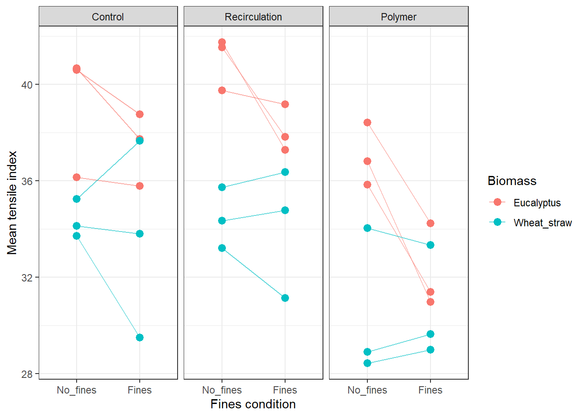
An upward line from No_fines to Fines means fines increased tensile index.
A downward line means fines decreased tensile index.
Different slopes for Eucalyptus and wheat straw suggest a biomass × fines interaction.
Different slope patterns across the three panels suggest a three-way interaction.
mod_cook <- lmer(
mean_T_index ~ biomass * fines * hs_treatment +
(1 | Code),
data = cell_data,
REML = TRUE,
na.action = na.exclude
)